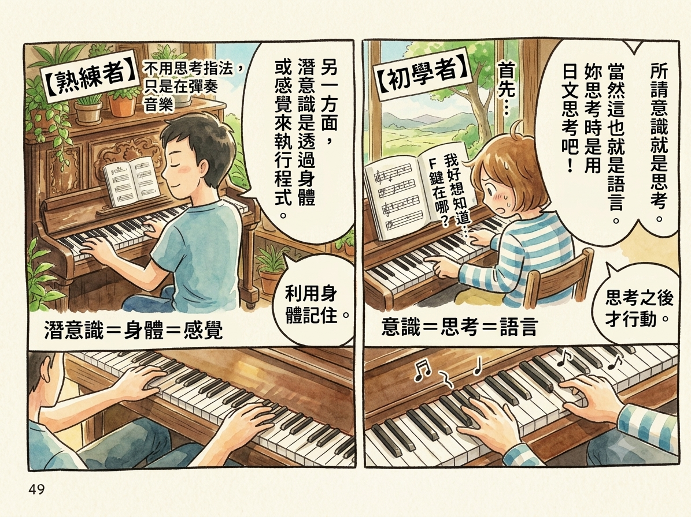

[筆記] 《驚人的NLP！》- 擺脫框架，重塑自我信念，安裝人生新程式
Contents
事件是事實，意義與印象是腦中的想像，而腦中的想像，我們都可以任意編輯。
NLP 即為：
- Neuro〔神經＝五感〕
- Linguistic〔語言〕
- Programming〔程式〕
核心底層：大腦的「潛意識程式」如何運作？
1. 潛意識：真正的行動主宰者
- 兩萬倍的力量： 意識（頭腦）負責「做決定」（如：我要減重、我要戒菸），但潛意識（身體感覺）才是真正的「執行者」。當兩者方向相反時，意志力會瞬間崩潰。
- 「理解」與「體會」的落差：
- 理解： 意識層面的知道（如看書研究開車）。
- 體會： 潛意識層面的「身體學會」（如實際上路後不經思考的自動化操作）。NLP 的核心目的，就是將知識從「理解」過渡到「體會」。
2. 潛意識程式的四大設定特徵
人類一生的幸與不幸，取決於潛意識在成長過程中被寫入了什麼程式。
- 開心／痛苦原則： 潛意識的本質是「尋求安全、迴避危險」。它透過「精神性」或「物理性」的苦樂體驗來建立程式。對人類而言，精神痛苦（如冷言相對帶來的否定）比物理痛苦更強烈，引起的程式也更多。
- 一般化（過度連結）： 大腦容易將單一經驗擴大到全體。建立公式（如 $X \text{（特定事件）} = Y \text{（全體恐懼）}$），導致反應失去彈性。
- 衝擊與重複： 寫入程式的兩大管道。 「衝擊」 指強烈的單次體驗（如摔下樓）； 「重複」 指頻繁的見聞或語言（如每天被責罵、無意識複製父母的模式）。
- 重要他人引導： 接觸最頻繁的人（如雙親、祖父母），是個人性格與底層程式的主要塑造者。

核心技術：掌握情緒與改寫程式的兩大槓桿
NLP 改變心智狀態與重新安裝程式時，最關鍵的兩個方向就是切換 「融入（體驗）」 與 「解離（觀照）」：
1. 「融入」與「解離」的系統化對比
| 狀態類型 | 核心定義與意象 | 優點（好處） | 缺點（壞處） |
|---|---|---|---|
| 融入 (Associate) |
第一人稱視角 身心徹底沉浸在狀況之中，用自己的眼睛看世界。 |
1. 能最大化感受生活中的小喜悅。 2. 用於美好體驗時，能帶來強烈情感衝擊，高效寫入新程式並維持強大行動力。 |
1. 容易變得 情緒化、迷失自我。 2. 陷入負面時， 視野會極度狹隘，看不清真相。 |
| 解離 (Dissociate) |
第三人稱視角 靈魂抽離，從外部像客觀的第三者一樣觀照自己。 |
1. 不受情緒影響，能冷靜控制自我。 2. 視野寬廣，能看清全局， 極易發現正面的觀點。 |
與融入相比，此狀態下比較 理智、冰冷，難以感受到愉快的熱情或喜悅。 |
2. 想像訓練的應用
- 解離式想像： 從外部寬廣地觀察範本（模仿對象）的行為與狀況。
- 融入式想像： 徹底把自己當成範本，全面重現當時「看、聽、觸覺」的五感臨場感。因為帶來強烈情感衝擊， 能在最短時間內安裝安全且完整的幸福程式。
實戰應用面（一）：極度痛苦時的情緒自救法（重新建構）
當我們要透過改變「 $X \text{（事件）} = Y \text{（解釋）}$ 」中的 $Y$ 來達到「重新建構（換個正面角度看世界）」時，若面對的是 極度痛苦 的狀況，請遵循以下剛性鐵律：
- 陷阱： 當人處於極度痛苦時，大腦會自動陷入「強烈的融入狀態」。此時視野極度狹隘、全面情緒化， 在這種狀態下，大腦絕對沒有多餘的精力去尋找正面的觀點。
- 鐵律：先解離，再建構！
- 第一步： 立即 放棄 想要換角度思考（重新建構）的意圖。
- 第二步： 把所有精力拿來做「解離」練習，讓自己抽離狀況、客觀看清全貌。
- 第三步： 當成功解離、情緒平復、視野變寬廣後，你自然就能從容地控制自我，輕而易舉地完成「重新建構」，發現正面意義。
實戰應用面（二）：高情商溝通與領導力
將潛意識的運作邏輯延伸到人際關係與職場帶領，可以整理出高管與優秀領導者的核心思維：
1. 建立信賴的「對話同步法」
- 同步的本質： 為了建立信賴（親和感），主動去發現對方與自己共通的部分，並用簡單易懂的方式讓對方知道。
- 同步的三大維度：
- 配合對方的「價值觀」
- 配合對方「感興趣的事物」
- 配合對方的「速度」（說話節奏、呼吸頻率）
2. 領導者的核心任務與「部下認同」
- 領導者的唯一使命： 無論組織型態為何，領導者的本質就是「指示目標」 並 「影響他人」，讓團隊朝著目標前進。
- 掌握部下的感情開關（價值觀）： 價值觀會產生「價值標準」，一旦旁人的行為低於部下的標準，部下就會產生負面情緒。因此， 「瞭解部下」的本質就是去察覺並掌握部下最重視的價值觀。
- 給予真正的認同： 人類最深層的渴望就是被他人「認同」（接納對方的狀態）。對部下表示感興趣，本質就是對他所重視的價值觀表示感興趣。當部下感受到被接納時，會產生最高程度的安全感與安心感，進而願意受你影響、為目標奮鬥。
連結
博客來-【圖解】驚人的NLP！：擺脫框架，重塑自我信念，安裝人生新程式